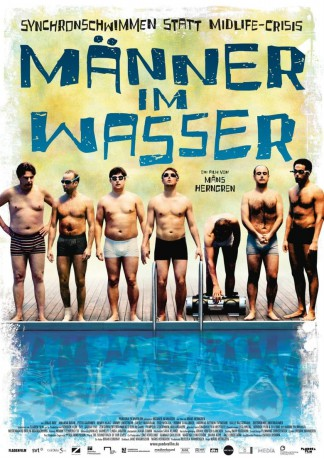

#9727 Männer im Wasser
Alternativ: The Swimsuit Issue (Englischer Titel)
 
 IMDB-Wertung: 5.8 / 10
IMDB-Wertung: 5.8 / 10  Metascore: 0
Metascore: 0 
Frederik der Held von Männer im Wasser, steckt in einer tiefen Krise. Als Redakteur ist er arbeitslos, seine Ehe liegt in Trümmern und schließlich erleidet er auch noch mit seinem geliebten Hockey-Team eine beschämend hohe Niederlage. Doch Frederik hat eine Idee, und was zunächst als schlechter Scherz belächelt wird, ist schon bald ein ernst gemeintes Vorhaben. Frederik will sich mit seiner Hockeymannschaft einer neuen Herausforderung stellen: Synchronschwimmen. Tatsächlich lassen sich seine Hockey-Freunde überreden, doch was die Männer im Wasser zunächst anstellen, sieht nicht im entferntesten nach Synchronschwimmen aus. Dennoch halten sie an ihrem großen Plan fest: der Weltmeisterschaft.
Jahr: 2008
Dauer: 97 Minuten
FSK: 0
Land: Schweden Studio: Pandora FilmproduktionTonspuren:
Untertitel:
Auflösung: 720p (1280x544) Größe: 2600 MB
Genre: Drama, Komödie
Regisseur: Måns Herngren
Drehbuch: Måns Herngren, Jane Magnusson, Brian Cordray
Soundtrack: Ebbot Lundberg
Darsteller:
- Jonas Inde als Fredrik
- Benny Haag als Peter
- Shebly Niavarani als Börje
 Dietrich Hollinderbäumer als Volker
Dietrich Hollinderbäumer als Volker- Ia Langhammer als Lillemor
- Erik Bolin als Dykare
- Christian Samuel Weber als Tsk Polisman (Police Officer)
- Amanda Davin als Sara
- Peter Gardiner als Victor
 Jimmy Lindström als Larry
Jimmy Lindström als Larry- Ossi Niskala als Jarmo
- Henrik Svalander als Bobo
- Andreas Rothlin Svensson als Charles
- Kalle Westerdahl als Markus
- Paula McManus als Lotta
- Jan Henrik Stahlberg als Karl
- Danilo Bejarano als Badvakten
- Bente Danielsson als Larrys Fru (Åsa)
- Gertrud Larsson als Journailst
- Jonas Lidman als Chef på budfirman
- Ylva Lööf als Peters fru
- Moa Myrén als Rika damen
- Jens Nilsson als Innebandytränaren
- Nicholas Olsson als Ma pa Bussen
- Bisse Unger als Markus son
- Marcus Tallberg-Freij als Kille som väntar på sina vänner (uncredited)
Datei: X:\2008(G-M)\Männer im Wasser (2008, FSK0, 1280x544).mkv seit 11.10.2018
Festplatte: HD 2008(G-Z)-2009(A-F)
 Es gibt insgesamt 73 Filme in der Gruppe '2008(G-M)'
Es gibt insgesamt 73 Filme in der Gruppe '2008(G-M)'